StarBiochem User Manual
(Version 2.3)
-
Welcome to StarBiochem
-
Opening StarBiochem
-
StarBiochem at a glance
-
Loading a protein structure
-
Manipulating the default
view
-
Visualizing atoms and
bonds
-
Displaying molecular
structures
-
Additonal Features
Welcome to
StarBiochem
StarBiochem is a 3D protein viewer and runs on
standard Linux, Windows and Mac computers.
Opening
StarBiochem
To get started with StarBiochem:
-
Navigate to http://web.mit.edu/star/biochem.
-
Click on the Start
button to launch
the StarBiochem application.
- Click Trust
when a prompt appears
asking if you trust the certificate.
Return to top
StarBiochem at a glance
This is the view you will see
StarBiochem opens.
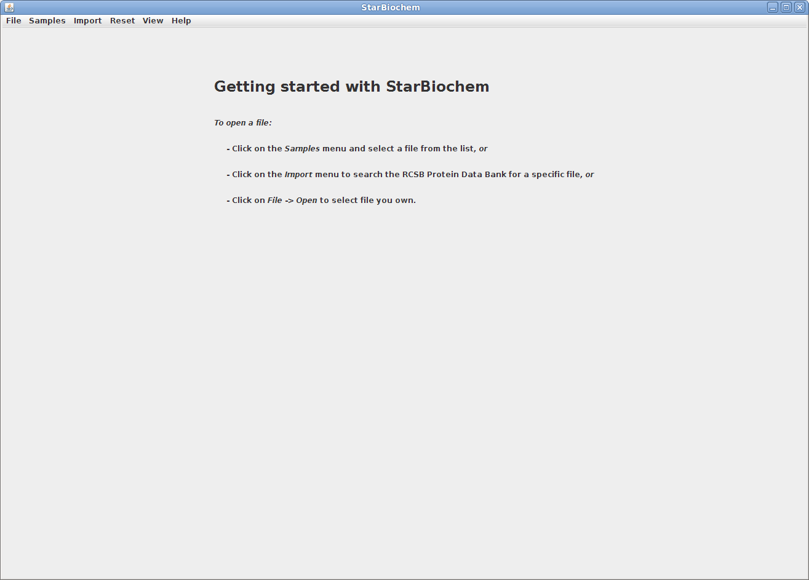
Return to top
Loading a protein
structure
StarBiochem enables the visualization of molecules
encoded within the Protein Data Bank (PDB) files. PDB
files are named by a four-character ID such as
“1GXX”. You may load any file found in the PDB,
select one from the Samples menu or open files
stored locally on your computer.
- To open a file from the PDB:
- Click on Import
->
RCSB (Protein
Data Bank).
- Enter the four-character ID of a PBD file
(eg. 3D9S), click
Open.
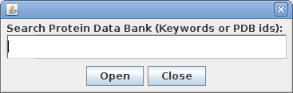
- When the search results appear, choose the
desired PDB file and click
Open.
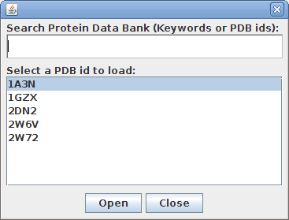
- Alternatively, select a PDB file from the
Samples
menu.
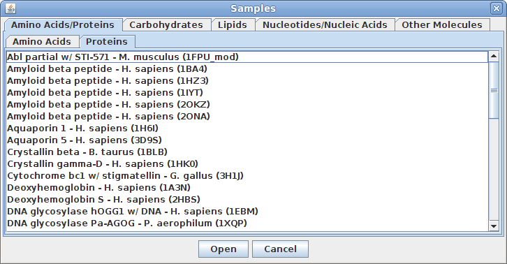
- To load a PDB file stored locally on your
computer, click on File
->
Open and select the desired file.
Upon opening a PDB file in StarBiochem, you will see
a 3D model of the protein in the viewer.
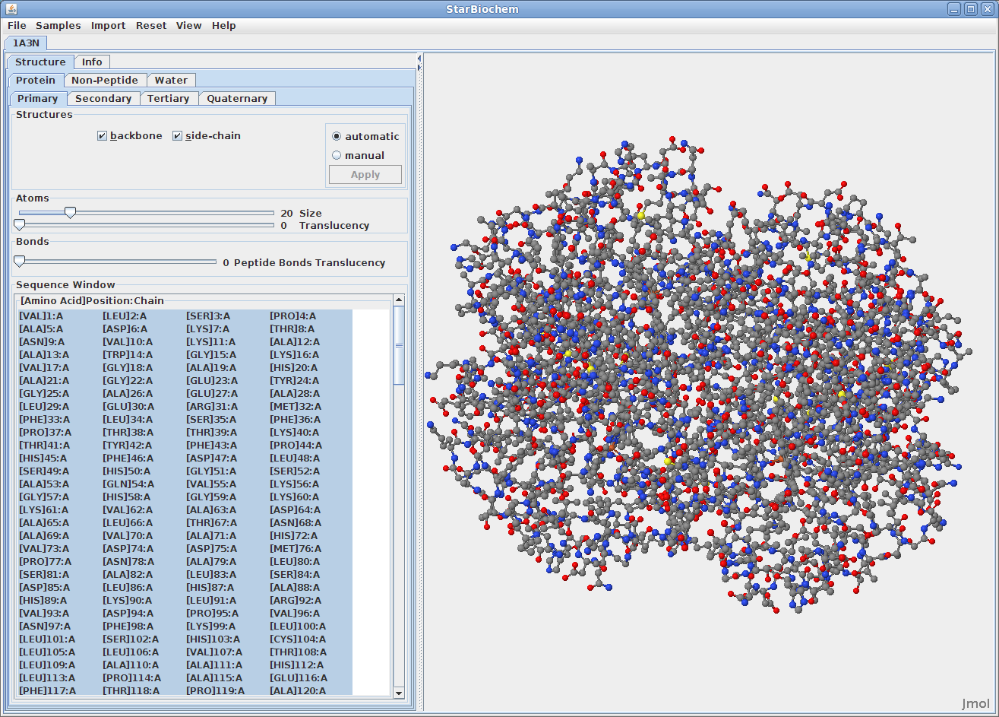
When multiple PBD files are open, they can be closed
individually or all at once by clicking on
File -> Close, or File
-> Close
All respectively.
Note:
Each tab contains
Automatic and
Manual options
which allow you to choose when the changes made are
applied to the image.
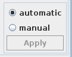
-
Automatic
immediately applies selection, size or translucency
changes.
-
Manual allows
you to make mutiple changes before clicking the
Apply button.
This is usually helpful when isolating a specific
portion of a structure or making mutiple changes to
a large structure which may require more time to
render.
Return to top
Manipulating the default view.
In the top menu selectHelp->Structure
viewing instructions.
This will open a small window with instructions for
manipulating the image of the structure.
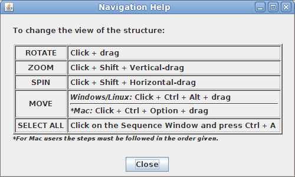
Return to top
Visualizing atoms and bonds
There are two different 3D models used to visually
represent the structure of molecules:
-
ball-and-stick model: the atom's
nucleus is drawn as a ball and covalent bonds
connection atoms are drawn as lines.
Advantage:
allows a better view of how atoms bond together.
-
space-filled model: atoms are
drawn as spheres, whose size represent the physical
space an atom occupies (the nucleus plus its
surrounding electrons, also called van der Waals
radius).
Advantage: allows for a more accurat
representation of the size of atoms and molecules.
You can switch from the
ball-and-stick model to the
space-filled model in StarBiochem by
increasing the size render of the atoms in the
structure.
- Click on the Primary tab. By default the
atom size is 20% which represents the
ball-and-stick model. Move the
Atoms
Size slider
completely to the right, 100%, to switch to the
space-filled model.
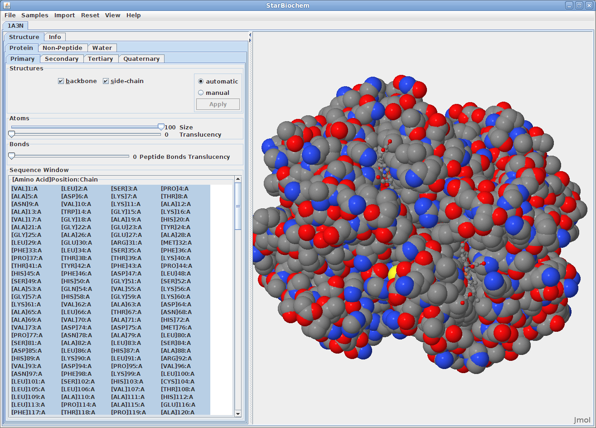
The default coloring scheme for atoms is as
follows:
-
Carbon (C)
atoms are grey spheres
-
Oxygen (O) atoms are red
spheres
-
Nitrogen (N) atoms are blue
spheres
-
Sulfur (S) atoms are yellow
spheres
-
Hydrogen (H) atoms are
white
spheres
Return to top
Displaying molecular
structures
The primary structure of a protein
lists the amino acids that make up a protein’s
sequence, but does not describe their corresponding
shape. The secondary structure of a
protein refers to how stretches of amino acids within
a protein chain are arranged in characteristic
patterns such as helices, sheets, and coils. The
tertiary structure describes the
folded shape of a protein chain and is determined by
characteristic properties of the amino acid residues,
such as acidic, basic, polar, and non-polar. The
quaternary structure indicates the
relationship between the chains of a molecule.
Displaying primary structures:
- Click on the Primary tab.
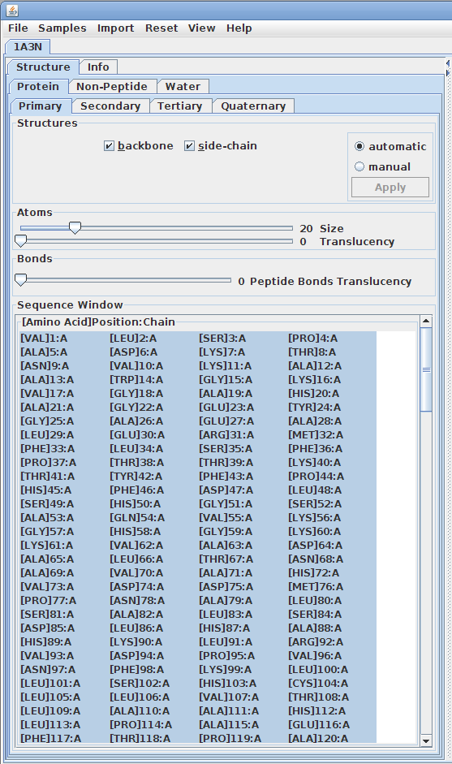
-
This view shows the amino acid
sequence and options for viewing the backbone and
sidechain. By default all of the amino acids are
selected.
-
Amino acids consist of two parts,
backbone and sidechain. Unchecking
coloring the box beside backbone or
sidechain allows changes to apply only the part
that is checked.
Displaying secondary
structures:
- Click on the Secondary tab.
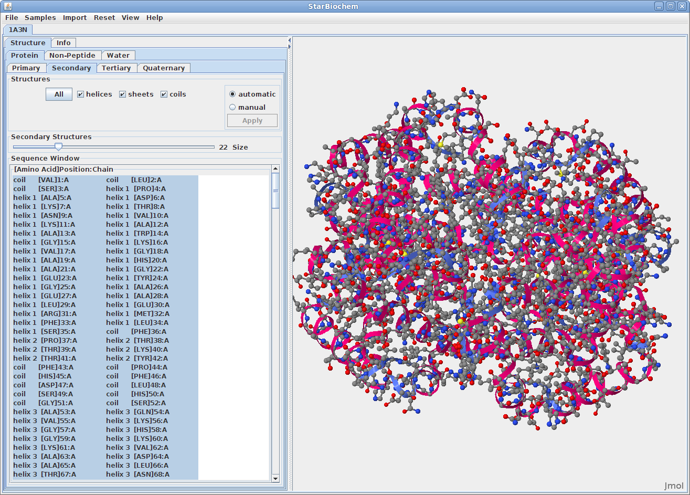
- This view shows the sequence of amino acids and
the corresponding helices, sheets and/or coils. By
default the structures size is set to zero.
- To display the secondary structures check the box
beside the structure(s) needed and move the
Size slider to
the right to increase the size of the structure(s).
Displaying tertiary structures:
- Click on the Tertiary tab.
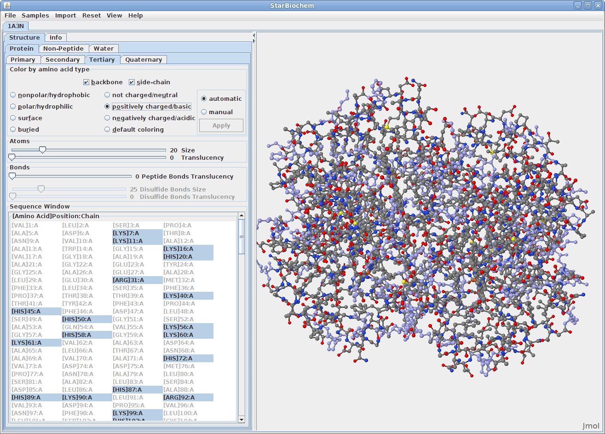
-
This view shows the sequence of
amino acids. The default view will mirror
the selections and sizes from
the Primary tab.
- To display the residue colors click on the
buttons beside the amino types, e.g. polar, nonpolar, etc.
- Click on the default coloring button to
return to the default coloring scheme.
Displaying quaternary structures:
- Click on the Quaternary tab.
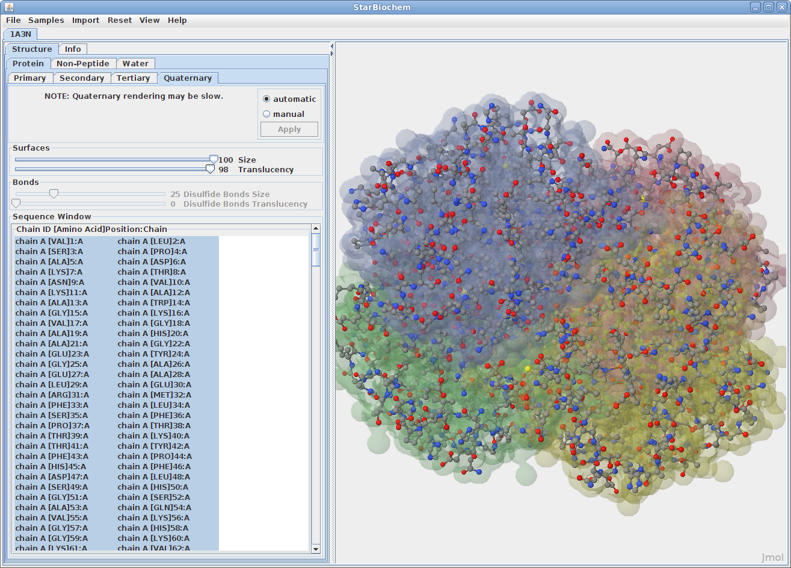
-
This view shows the quarternary
chains which are
alphabetically and some times numerically
identified (e.g. chain A, chain
B). By
default the surfaces' size are set to
zero.
-
To display the quarternary
structures (chains) increase the size by moving the
Size slider to
right.
Disulfide Bonds:
-
Disulfide bonds may appear in
both tertiary and quaternary structures. If the
molecule does not contain disulfide bonds the Size
and Translucency sliders are
disabled.
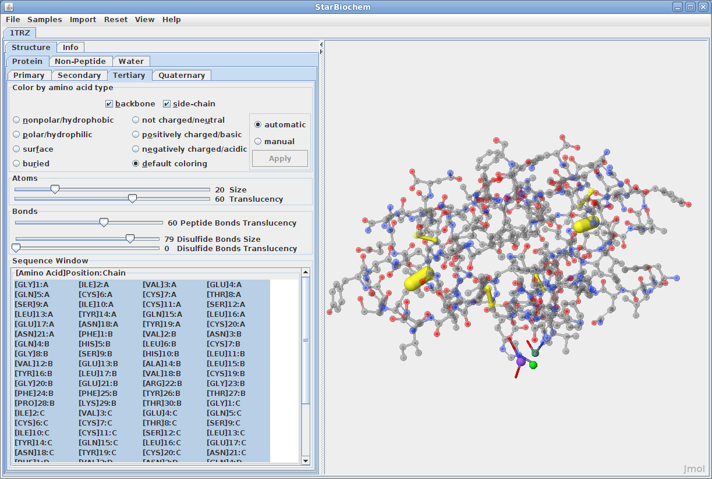
Displaying nucleic acids:
Click on the Nucleic
Acids tab.
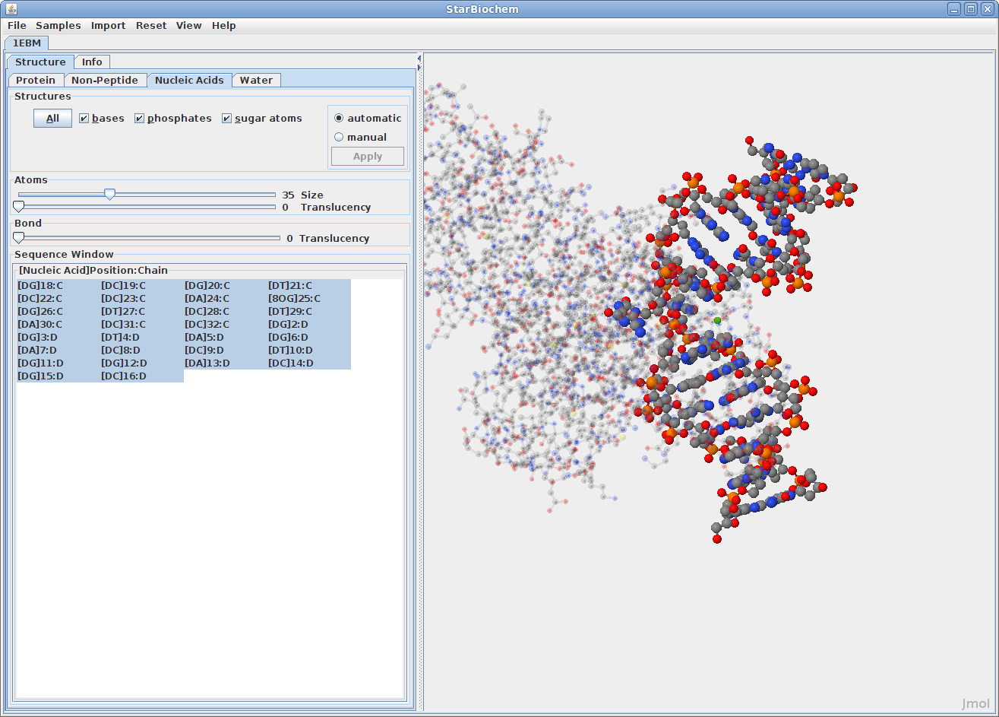
- This view will show the sequence of the nucleic
acids and options for selecting some or all of the
nucliec structures (bases, phosphates, or
sugars).
Displaying non-peptides:
Some proteins have the addition of a Non-Peptide tab. Select this
to view any non-peptide atoms within the protein and
change their size in the viewer.
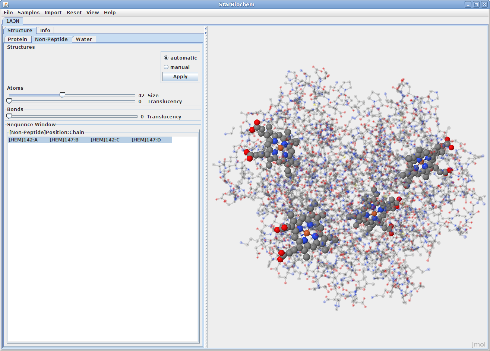
Displaying water atoms:
Many proteins have the addition of a Water tab. Select this tab
to see the oxygens that make up water molecules
within the protein (hydrogens rarely defined).
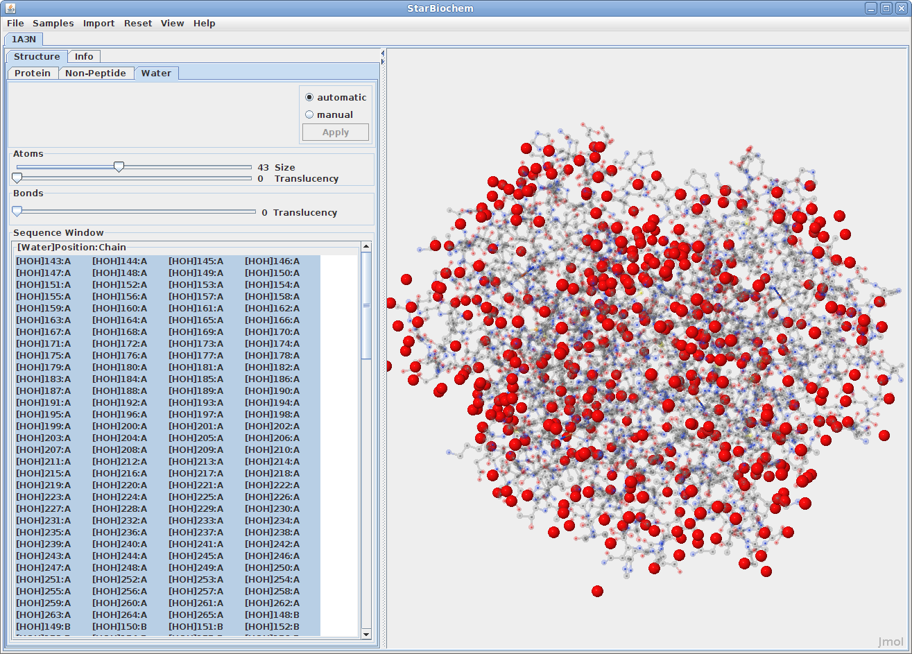
By default the size of the water atoms is set to
zero. Move the Size slider to the right to
make them visible.
Return to top
Selecting Atoms
and
Structures
StarBiochem allows for selection of groups or
individual atoms and structures.
Selecting Sequences:
- To select a single item in the Sequence Window simply click
on it.
- To select multiple items individually, click on
the first item, press
Ctrl (PC/Linux) or Apple (Mac) and click on
the remaining sequences desired.
- To select multiple amino acids as a group click
on the first amino acid, press Shift and click on the last
amno acid.
- To select multiple groups of amino acids, click
on the first amino acid, press Shift and click on the last
amino acid in the first group. Then press
Ctrl
(PC/Linux) or Apple (Mac) and click on
the first amino acid of the next group, press
Ctrl+Shift
(PC/Linux) or Apple+Shift (Mac) and
click on the last amino acid of the group.
- To unselect an amono acid press Ctrl and click on it.
Selecting Quaternary Sequences:
- To select a single chain in the Sequence Window simply click
on it. The Quaternary tab does not
allow partial chain selections.
- To select multiple chains, press Ctrl while clicking on each
chain.
- To unselect a chain press Ctrl and click on it.
Additional
Features
StarBiochem has several additional tools to
manipulate structures.
Reset:
In the top menu select Reset to view the reset
options.
-
Reset camera,
resets the image in the viewer to the default
position after it has been rotated or moved.
-
Reset
structure, resets the selection in the
Sequence
Window and the image in the viewer to the
default size, color and position for the selected
file only.
-
Reset all
structures, resets the selection in the
Sequence
Window and the image in the viewer to the
default size, color and position for all open
files.
Show/Hide Hydrogens:
Most pdb files do not show the hydrogen atoms for the
structure.
-
To show the hydrogens
for a structure go to the top menu and select
View. Select
the Show/Hide
Hydrogens option. This will calculate the
hydrogens for the structure. If the structure is
large this may take a little time to load.
Viewing specific regions and setting the
center of rotation:
-
From the top menu
select View
-> View Specific
Regions / Set Center of Rotation. This will open
a smaller window that contains the structure tabs
and Sequence
Window. Notice that nothing
is selected in the Sequence
Window.
-
To change the
center of rotation for the structure, select one
or more amino acids from the Sequence Window in any
of the tabs.
-
Move the
VDW Radius
slider to hide all atoms outside of the specified
Van der Waals radii of the selected amino
acid(s).
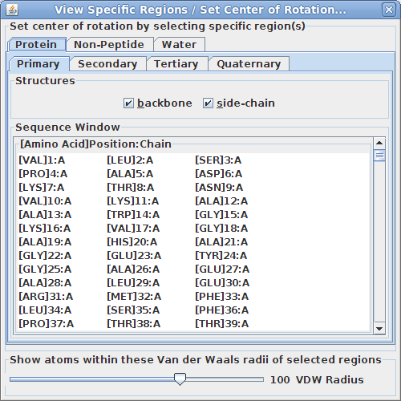
This tool is particularly useful for isolating
specific region(s) of the structure to examine more
closely how they interact.
The Info tab:
The Info tab
contains identifying details about the structure and
offers resources for further research.
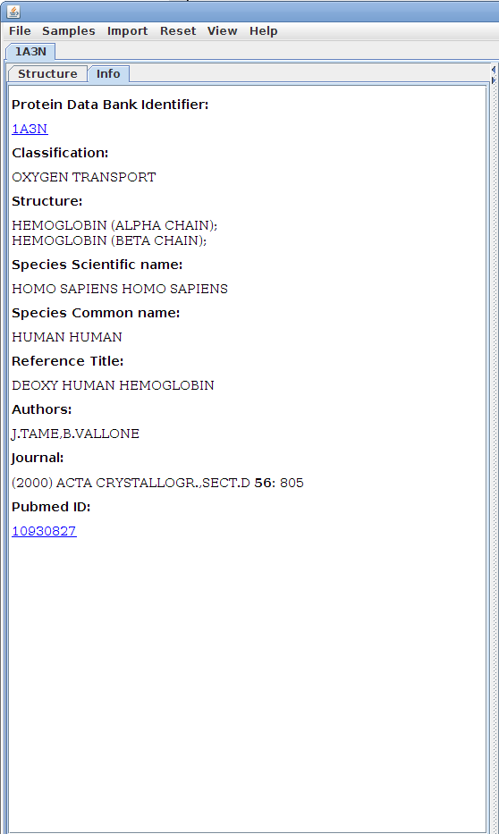
File Contents Window:
The File
Contents window contains the exact contents of
the PDB file that is open. This window is primarily
useful for identifying a damaged PDB file or for
advanced users who are familiar with how PDB files
are written and work.
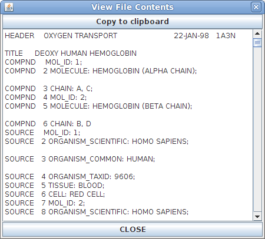
Return to top